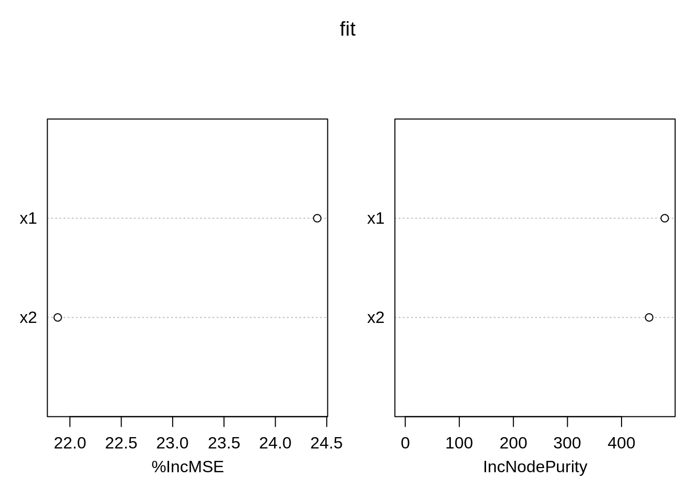
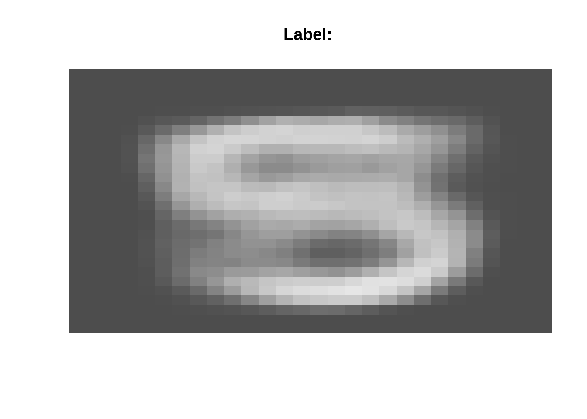
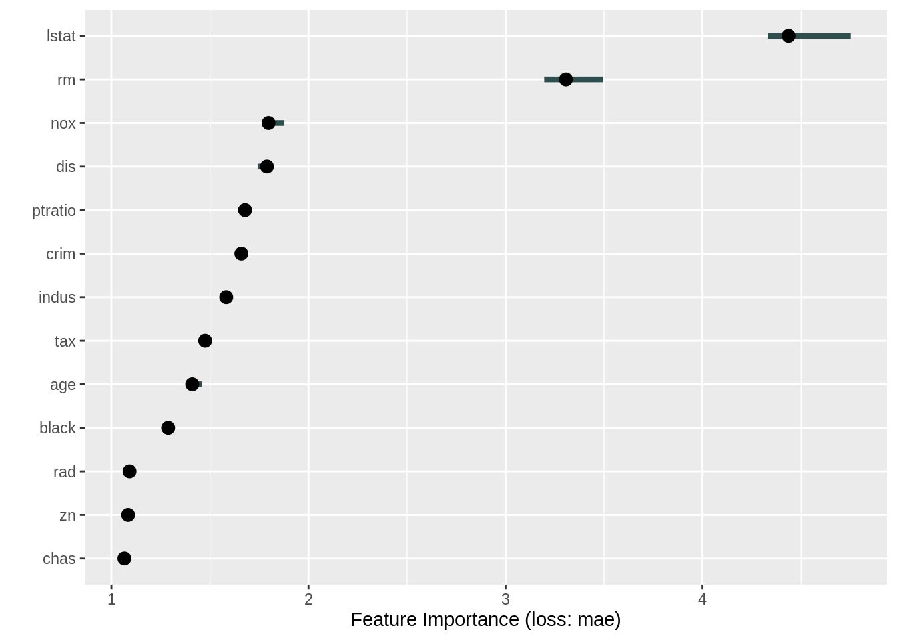
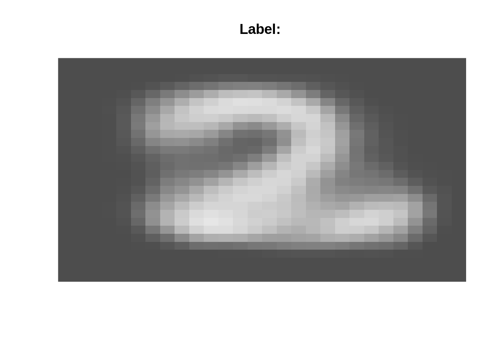

5 Explainable AI (xAI), NLP, and RNNs
The goal of xAI is to explain WHY a fitted ML models makes certain predictions, for example how important different variables are for predictions etc. There are various important applications for this, ranging from a better technical understanding of the models over understanding which data is important to improve predictions to questions of fairness and discrimination (e.g. to understand if an algorithm uses skin color to make a decision).
In general, xAI != causality Before we discuss xAI methods in more detail, we want to make one thing very clear - in general, xAI methods measure which variables are used by the algorithm for predictions, or how much variables improve predictions.
The important point to note here: if a variable causes something, we could also expect that it helps to predict the very thing. The opposite, however, is not generally true - it is very often possible that a variable that doesn’t cause something can predict something.
In statistics (in particular course: advanced biostatistics), we discuss the issue of causality at length. Here, we don’t want to go into the details, but again, you should in general resist to interpret indicators of importance in xAI as causal effects. They tell you something about what’s going on in the algorithm, not about what’s going on in reality.
Here an example for the variable importance indicators in the RF algorithm. The purpose of this script is to show that RF variable importance will split importance values for collinear variables evenly, even if collinearity is low enough so that variables are sepearable and would be correctly separated by an lm / ANOVA
We simulate a dataset with 2 predictors that are strongly correlated, but only one of them has an effect on the response.
# simulation parameters
n = 1000
col = 0.7
# create collinear predictors
x1 = runif(n)
x2 = col * x1 + (1-col) * runif(n)
# response is only influenced by x1
y = x1 + rnorm(n)lm / anova correctly identify x1 as causal variable
anova(lm(y ~ x1 + x2))## Analysis of Variance Table
##
## Response: y
## Df Sum Sq Mean Sq F value Pr(>F)
## x1 1 73.59 73.595 74.0440 <2e-16 ***
## x2 1 1.75 1.751 1.7613 0.1848
## Residuals 997 990.95 0.994
## ---
## Signif. codes: 0 '***' 0.001 '**' 0.01 '*' 0.05 '.' 0.1 ' ' 1Fit RF and show variable importance
fit <- randomForest(y ~ x1 + x2, importance=TRUE)
varImpPlot(fit) Variable importance is now split nearly evenly.
Task: understand why this is - remember:
- How the random forest works - variables are randomly hidden from the regression tree when the trees for the forest are built
- Remember that as x1 ~ x2, we can use x2 as a replacement for x1
- Remember that the variable importance measures the average contributions of the different variables in the trees of the forest
5.1 xAI Methods
In this lecture we will work with another famous dataset, the Boston housing dataset:
We will fit a random forest and use the iml pkg for xAI, see
set.seed(123)
library("iml")
library("randomForest")
data("Boston", package = "MASS")
rf = randomForest(medv ~ ., data = Boston, ntree = 50)xAI packages are generic, i.e. they can handle almost all ML models. First, we have to create a Predictor object, that holds the model and the data. The iml package uses R6 classes: New objects can be created by calling Predictor$new().
X = Boston[which(names(Boston) != "medv")]
predictor = Predictor$new(rf, data = X, y = Boston$medv)5.1.1 Variable Importance
Importance - not to be mistaken for the RF importance. This importance can be calculated for all ML models and is based on a permutation approach (have a look at the book):
imp = FeatureImp$new(predictor, loss = "mae")
plot(imp)It tells us how important the individual variables are for predictions.
5.1.2 Partial dependencies
Partial dependencies are similar to allEffects plot, the idea is to visualize “marginal effects” of predictors (with the feature argument we specify the variable we want to visualize):
eff = FeatureEffect$new(predictor, feature = "rm", method = "pdp", grid.size = 30)
plot(eff)
Partial dependencies can be also plotted for single observations:
eff = FeatureEffect$new(predictor, feature = "rm", method = "pdp+ice", grid.size = 30)
plot(eff)
One disadvantage of partial dependencies is that they are sensitive to correlated predictors. Accumulated local effects can be used to account for correlation for predictors
5.1.3 Accumulated local effects
ALE re basically partial dependencies plots but try to correct for correlations between predictors
ale = FeatureEffect$new(predictor, feature = "rm", method = "ale")
ale$plot()
If there is no collinearity, you shouldn’t see much difference between partial dependencies and ALE plots.
5.1.4 Friedmans H-statistic
The H-statistic can be used to find interactions between predictors. However, again, keep in mind that the H-statistic is sensible to correlation between predictors:
interact = Interaction$new(predictor, "lstat")
plot(interact)
5.1.5 Global explainer - Simplifying the ML model
Another idea is to simplify the ML model with another simpler model such as a decision tree. We create predictions for a lot of different predictors values and then we will fit a decision tree on the predictions:
library(partykit)## Loading required package: libcoin## Loading required package: mvtnorm##
## Attaching package: 'mvtnorm'## The following object is masked from 'package:mclust':
##
## dmvnormtree = TreeSurrogate$new(predictor, maxdepth = 2)
plot(tree)
5.1.6 Local explainer - LIME explaining single instances (observations)
The global approach is to simplify a black-box model via a simpler surrogate Model.
However, sometimes we are only interested in understanding how single observations/predictions are generated. The lime approach explores the feature space around one observations and fits then a simpler model (e.g. a linear model) on the feature space around one observation:
library(glmnet)## Loaded glmnet 4.1-1lime.explain = LocalModel$new(predictor, x.interest = X[1,])## Loading required package: gowerlime.explain$results## beta x.recoded effect x.original feature feature.value
## rm 4.1893817 6.575 27.545185 6.575 rm rm=6.575
## ptratio -0.5307031 15.300 -8.119758 15.3 ptratio ptratio=15.3
## lstat -0.4398104 4.980 -2.190256 4.98 lstat lstat=4.98plot(lime.explain)
5.1.7 Local explainer - Shapley
Shapley computes feature contributions for single predictions with the Shapley value, an approach from cooperative game theory. The idea is that the features values of an instance cooperate to achieve the prediction. The Shapley value fairly distributes the difference of the instance’s prediction and the datasets average prediction among the features:
shapley = Shapley$new(predictor, x.interest = X[1,])
shapley$plot()
5.2 Natural Language Processing (NLP)
What this video to get an idea about what NLP is about
See also the blog post linked with the youtube video with accompanying code to the video. Moreover, here is an article that shows now NLP works with keras, however, written in Python. As a challenge, you can take the code and implement it in R
5.3 Recurrent neural networks (RNNs)
Recurrent Neural Networks are used to model sequential data, i.e. temporal sequence that exhibits temporal dynamic behavior. Here is a good introduction to the topic: